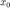
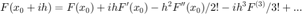
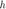
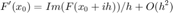
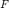
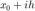
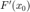
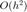
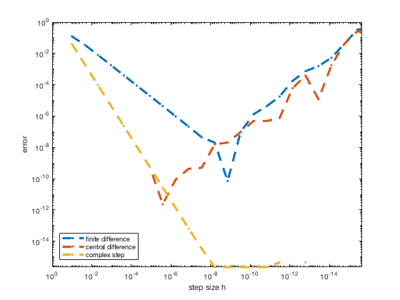

Complex Step in few steps...
Contents
Prof Joseph Morlier, ISAE-SUPAERO
The idea is simple and dates from 1967 [1]. Recent work in multidisciplinary optimization [1] has revived the interest of this method (sensitivity calculation). It is in fact a development of Taylor in the case where F (the function to be derived) is analytic with real values.
Let $F(z)$be a function and  a real, Taylor development of $F(z)$gives:

...by taking imaginary part (dividing by ), it comes:

Evaluate  with a complex argument , dividing by , gives the derivative  with an order of precision . Let's take$h=10^{-8}$ , the approximation error of is the same than rounded error.
clear all; close all; %display f = @(x) sin(3*x)*log(x); ezplot(f) %Symbolic computation (check only %dfdx = 3*cos(3*x)*log(x) + sin(3*x)/x syms x dfdx=diff(f,x) %Derivative evaluation at x=0.7 for 30 values in the range 10^-1 à 10^-20 x = 0.7; %Loop on step k=0; for h = logspace(-1,-20,30) k=k+1; H(k)=h; %analytical derivative dfdx_a=3*cos(3*x)*log(x) + sin(3*x)/x; %finite difference dfdx_fd = (f(x) - f(x-h))/h; %central difference dfdx_cd = (f(x+h)-f(x-h))/(2*h); %complex method dfdx_cm = imag(f(x+h*i)/h); %Compute errors errs(k,1)=abs(dfdx_fd - dfdx_a); errs(k,2)=abs(dfdx_cd - dfdx_a); errs(k,3)=abs(dfdx_cm - dfdx_a); end %Display loglog(H,errs,'--.','linewidth', 3) axis([eps 1 eps 1]) set(gca,'xdir','rev') legend('finite difference','central difference','complex step','location','southwest') xlabel('step size h') ylabel('error')
Warning: Function failed to evaluate on array inputs; vectorizing the function may speed up its evaluation and avoid the need to loop over array elements. dfdx = 3*cos(3*x)*log(x) + sin(3*x)/x
The complex step method is always more accurate than the finite difference method of order 1 (normal!). The method of centered differences (of order 2) begins to diverge more quickly (towards 10 ^ -6) than the method complex step (10 ^ -8)
References
[1] Lyness, James N., and Moler, Cleve B., Numerical Differentiation of Analytic Functions, SIAM J. Numerical Analysis 4, 1967, pp. 202-210. epubs.siam.org/doi/abs/10.1137/0704019
[2] Martins, Joaquim R. R. A., A Guide to the Complex-Step Derivative Approximation, complex step guide
Online https://blogs.mathworks.com/cleve/2013/10/14/complex-step-differentiation/